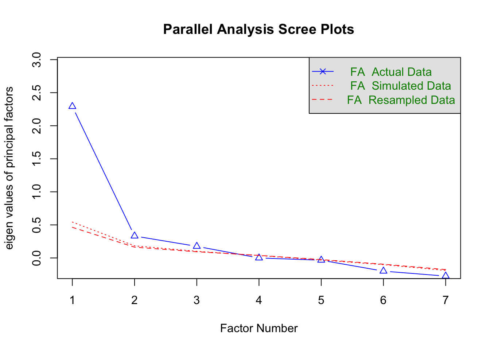

Practicum 1
Gianni Quaedvlieg
2024-01-22
Opdracht 1: R-omgeving naar wens maken.
Wanneer je R en Rstudio hebt gedownload en deze opent krijg je 3 verschillende schermen te zien. Als je een nieuw project wil beginnen kan je een nieuw script openen waardoor je 4 verschillende schermen te zien krijgt. Je kan een scherm groter of kleiner maken door met je muis de randen te verschuiven. Doorgaans zijn je script en de console2 de belangrijkste twee schermen die je tegelijkertijd de meeste aandacht wil geven.
Opdracht 2: Dataset downloaden.
Het is mogelijk om zelf een dataset in R aan te maken maar doorgaans werken wij met reeds bestaande data verzameld middels een extern programma (zoals Qualtrics). Voor de practica van dit vak hebben wij de datasets al opgeschoond (in practicum 5 leer je hoe je dit zelf kan doen) en omgezet naar een csv-bestand.
library(tidyverse)## ── Attaching core tidyverse packages ────────────────────────────────────── tidyverse 2.0.0 ──
## ✔ dplyr 1.1.4 ✔ readr 2.1.4
## ✔ forcats 1.0.0 ✔ stringr 1.5.1
## ✔ ggplot2 3.4.4 ✔ tibble 3.2.1
## ✔ lubridate 1.9.3 ✔ tidyr 1.3.0
## ✔ purrr 1.0.2
## ── Conflicts ──────────────────────────────────────────────────────── tidyverse_conflicts() ──
## ✖ dplyr::filter() masks stats::filter()
## ✖ dplyr::lag() masks stats::lag()
## ℹ Use the conflicted package (<http://conflicted.r-lib.org/>) to force all conflicts to become errorsgetwd()## [1] "/Users/gianniquaedvlieg/Documents/GitHub/VU-CWIDM"setwd("/Users/gianniquaedvlieg/Documents/GitHub/VU-CWIDM/files")
url <- "CWIDM_practicum_1_dataset.csv"
D <- read_csv(url)## Rows: 234 Columns: 24
## ── Column specification ──────────────────────────────────────────────────────────────────────
## Delimiter: ","
## dbl (24): SATIS1, SATIS2, SATIS3, SATIS4, SATIS5, SATIS6, SATIS7, SATIS8, SA...
##
## ℹ Use `spec()` to retrieve the full column specification for this data.
## ℹ Specify the column types or set `show_col_types = FALSE` to quiet this message.D## # A tibble: 234 × 24
## SATIS1 SATIS2 SATIS3 SATIS4 SATIS5 SATIS6 SATIS7 SATIS8 SATIS9 SATIS10
## <dbl> <dbl> <dbl> <dbl> <dbl> <dbl> <dbl> <dbl> <dbl> <dbl>
## 1 5 4 6 5 4 5 3 2 3 4
## 2 5 4 6 6 4 6 2 3 3 5
## 3 5 4 5 4 4 5 1 4 1 4
## 4 4 4 5 5 1 5 2 5 3 4
## 5 1 4 5 2 3 5 5 6 5 6
## 6 5 4 5 5 4 5 4 4 4 4
## 7 4 1 5 4 1 4 1 4 1 1
## 8 4 4 4 4 4 4 4 4 4 4
## 9 4 4 6 5 4 5 1 4 4 4
## 10 4 4 5 4 4 5 4 3 4 4
## # ℹ 224 more rows
## # ℹ 14 more variables: SATIS11 <dbl>, SATIS12 <dbl>, SuWB1 <dbl>, SuWB2 <dbl>,
## # SuWB3 <dbl>, SuWB4 <dbl>, SuWB5 <dbl>, SuWB6 <dbl>, SuWB7 <dbl>,
## # Leeftijd <dbl>, Geslacht <dbl>, Werk <dbl>, Opleiding <dbl>,
## # SNSaccount <dbl>Opdracht 3: Steefproef analyseren.
Om een gevoel voor de dataset te krijgen en te controleren of er geen gekke dingen gebeuren is het goed om te beginnen met wat beschrijvende analyses.
Opdracht 4: Correlatietabel maken.
Nu we een gevoel voor de dataset hebben willen we variabelen gaan maken van de verschillende items die een bepaald construct moeten meten. Als eerste stap is het daarom goed om te weten of de verschillende items sterk met elkaar samenhangen. Maak hiervoor een correlatiematrix aan in R tussen alle items die tevredenheid moeten meten (SATIS1: SATIS12).
library(psych)##
## Attaching package: 'psych'## The following objects are masked from 'package:ggplot2':
##
## %+%, alphacorr.test(select(D, SATIS1:SATIS12), alpha = T)## Call:corr.test(x = select(D, SATIS1:SATIS12), alpha = T)
## Correlation matrix
## SATIS1 SATIS2 SATIS3 SATIS4 SATIS5 SATIS6 SATIS7 SATIS8 SATIS9 SATIS10
## SATIS1 1.00 -0.26 0.59 0.62 -0.16 0.52 -0.26 -0.42 -0.28 -0.13
## SATIS2 -0.26 1.00 -0.14 -0.16 0.71 -0.01 0.66 -0.09 0.68 0.64
## SATIS3 0.59 -0.14 1.00 0.68 -0.02 0.63 -0.10 -0.52 -0.09 0.04
## SATIS4 0.62 -0.16 0.68 1.00 -0.05 0.55 -0.17 -0.44 -0.16 -0.06
## SATIS5 -0.16 0.71 -0.02 -0.05 1.00 0.06 0.67 -0.13 0.69 0.61
## SATIS6 0.52 -0.01 0.63 0.55 0.06 1.00 -0.02 -0.40 0.01 0.06
## SATIS7 -0.26 0.66 -0.10 -0.17 0.67 -0.02 1.00 -0.06 0.73 0.55
## SATIS8 -0.42 -0.09 -0.52 -0.44 -0.13 -0.40 -0.06 1.00 -0.01 -0.11
## SATIS9 -0.28 0.68 -0.09 -0.16 0.69 0.01 0.73 -0.01 1.00 0.62
## SATIS10 -0.13 0.64 0.04 -0.06 0.61 0.06 0.55 -0.11 0.62 1.00
## SATIS11 0.47 -0.08 0.45 0.55 0.12 0.29 0.02 -0.32 -0.03 0.09
## SATIS12 0.04 0.45 0.17 0.06 0.53 0.14 0.36 -0.21 0.46 0.38
## SATIS11 SATIS12
## SATIS1 0.47 0.04
## SATIS2 -0.08 0.45
## SATIS3 0.45 0.17
## SATIS4 0.55 0.06
## SATIS5 0.12 0.53
## SATIS6 0.29 0.14
## SATIS7 0.02 0.36
## SATIS8 -0.32 -0.21
## SATIS9 -0.03 0.46
## SATIS10 0.09 0.38
## SATIS11 1.00 0.11
## SATIS12 0.11 1.00
## Sample Size
## [1] 234
## Probability values (Entries above the diagonal are adjusted for multiple tests.)
## SATIS1 SATIS2 SATIS3 SATIS4 SATIS5 SATIS6 SATIS7 SATIS8 SATIS9 SATIS10
## SATIS1 0.00 0.00 0.00 0.00 0.44 0.00 0.00 0.00 0.00 1.00
## SATIS2 0.00 0.00 0.96 0.35 0.00 1.00 0.00 1.00 0.00 0.00
## SATIS3 0.00 0.04 0.00 0.00 1.00 0.00 1.00 0.00 1.00 1.00
## SATIS4 0.00 0.01 0.00 0.00 1.00 0.00 0.33 0.00 0.46 1.00
## SATIS5 0.02 0.00 0.72 0.47 0.00 1.00 0.00 1.00 0.00 0.00
## SATIS6 0.00 0.94 0.00 0.00 0.34 0.00 1.00 0.00 1.00 1.00
## SATIS7 0.00 0.00 0.15 0.01 0.00 0.73 0.00 1.00 0.00 0.00
## SATIS8 0.00 0.18 0.00 0.00 0.05 0.00 0.39 0.00 1.00 1.00
## SATIS9 0.00 0.00 0.17 0.02 0.00 0.92 0.00 0.90 0.00 0.00
## SATIS10 0.04 0.00 0.58 0.38 0.00 0.36 0.00 0.09 0.00 0.00
## SATIS11 0.00 0.25 0.00 0.00 0.07 0.00 0.78 0.00 0.67 0.19
## SATIS12 0.56 0.00 0.01 0.37 0.00 0.03 0.00 0.00 0.00 0.00
## SATIS11 SATIS12
## SATIS1 0.0 1.00
## SATIS2 1.0 0.00
## SATIS3 0.0 0.25
## SATIS4 0.0 1.00
## SATIS5 1.0 0.00
## SATIS6 0.0 0.91
## SATIS7 1.0 0.00
## SATIS8 0.0 0.03
## SATIS9 1.0 0.00
## SATIS10 1.0 0.00
## SATIS11 0.0 1.00
## SATIS12 0.1 0.00
##
## To see confidence intervals of the correlations, print with the short=FALSE optionOpdracht 5: Onderliggende structuur achterhalen.
Om de onderliggende structuur van de verschillende items te achterhalen gaan we een factoranalyse uitvoeren. Hierbij krijgen we een output waarbij R aangeeft of er onderliggende dimensies (factoren) zijn waarbij verschillende items per factor hoog onderling correleren. Voer een dergelijke factoranalyse uit voor de verschillende SATIS-items. Voer hierbij een factoranalyse met ‘principal axis factoring’ uit met een ‘direct oblimin’ rotatie.
Eerst willen we achterhalen hoe veel onderliggende dimensies er in de dataset aanwezig zijn.
print(fa.parallel(select(D, SATIS1 : SATIS12), fm = "pa", fa = "fa"))
## Parallel analysis suggests that the number of factors = 2 and the number of components = NA
## Call: fa.parallel(x = select(D, SATIS1:SATIS12), fm = "pa", fa = "fa")
## Parallel analysis suggests that the number of factors = 2 and the number of components = NA
##
## Eigen Values of
##
## eigen values of factors
## [1] 3.69 2.59 0.10 0.01 -0.01 -0.04 -0.15 -0.29 -0.39 -0.51 -0.63 -0.69
##
## eigen values of simulated factors
## [1] 0.56 0.32 0.24 0.17 0.11 0.05 -0.01 -0.06 -0.11 -0.18 -0.23 -0.29
##
## eigen values of components
## [1] 4.11 3.52 0.78 0.67 0.62 0.47 0.41 0.36 0.34 0.26 0.25 0.22
##
## eigen values of simulated components
## [1] NANu we op basis van het Knik-1 criterium en het Kaiser’s criterium weten dat we2 factoren hebben gaan we deze factoranalyse uitvoeren.
library(GPArotation)##
## Attaching package: 'GPArotation'## The following objects are masked from 'package:psych':
##
## equamax, variminfit <- fa(select(D, SATIS1 : SATIS12), nfactors = 2, rotate = "oblimin", fm = "pa")
fit## Factor Analysis using method = pa
## Call: fa(r = select(D, SATIS1:SATIS12), nfactors = 2, rotate = "oblimin",
## fm = "pa")
## Standardized loadings (pattern matrix) based upon correlation matrix
## PA1 PA2 h2 u2 com
## SATIS1 -0.18 0.75 0.61 0.39 1.1
## SATIS2 0.83 -0.07 0.71 0.29 1.0
## SATIS3 0.03 0.84 0.71 0.29 1.0
## SATIS4 -0.06 0.82 0.69 0.31 1.0
## SATIS5 0.86 0.07 0.74 0.26 1.0
## SATIS6 0.09 0.68 0.46 0.54 1.0
## SATIS7 0.79 -0.07 0.63 0.37 1.0
## SATIS8 -0.17 -0.59 0.36 0.64 1.2
## SATIS9 0.84 -0.07 0.72 0.28 1.0
## SATIS10 0.73 0.07 0.53 0.47 1.0
## SATIS11 0.08 0.58 0.33 0.67 1.0
## SATIS12 0.56 0.21 0.34 0.66 1.3
##
## PA1 PA2
## SS loadings 3.68 3.15
## Proportion Var 0.31 0.26
## Cumulative Var 0.31 0.57
## Proportion Explained 0.54 0.46
## Cumulative Proportion 0.54 1.00
##
## With factor correlations of
## PA1 PA2
## PA1 1.00 -0.09
## PA2 -0.09 1.00
##
## Mean item complexity = 1.1
## Test of the hypothesis that 2 factors are sufficient.
##
## df null model = 66 with the objective function = 6.46 with Chi Square = 1473.54
## df of the model are 43 and the objective function was 0.37
##
## The root mean square of the residuals (RMSR) is 0.03
## The df corrected root mean square of the residuals is 0.04
##
## The harmonic n.obs is 234 with the empirical chi square 30.27 with prob < 0.93
## The total n.obs was 234 with Likelihood Chi Square = 83.99 with prob < 0.00018
##
## Tucker Lewis Index of factoring reliability = 0.955
## RMSEA index = 0.064 and the 90 % confidence intervals are 0.043 0.084
## BIC = -150.59
## Fit based upon off diagonal values = 0.99
## Measures of factor score adequacy
## PA1 PA2
## Correlation of (regression) scores with factors 0.96 0.95
## Multiple R square of scores with factors 0.92 0.89
## Minimum correlation of possible factor scores 0.84 0.79Opdracht 6: Items hercoderen.
Op basis van de factoren die uit de vorige opdracht naar voren zijn gekomen wil je achterhalen of deze allemaal een betrouwbare schaal vormen. Indien dit het geval is kan je hierna variabelen aanmaken die je gaat gebruiken voor de daadwerkelijke analyses. Voor het zover is moet je eerst zorgen dat alle variabelen dezelfde meeteenheid hebben en in dezelfde richting gecodeerd staan.
Eerst controleren we welke variabelen gehercodeerd moeten worden. Om het overzichtelijk te houden is het wel zo makkelijk om nieuwe correlatiematrixen te maken.
ctf1 <- corr.test(select(D, SATIS2, SATIS5, SATIS7, SATIS9, SATIS10, SATIS12))
ctf1## Call:corr.test(x = select(D, SATIS2, SATIS5, SATIS7, SATIS9, SATIS10,
## SATIS12))
## Correlation matrix
## SATIS2 SATIS5 SATIS7 SATIS9 SATIS10 SATIS12
## SATIS2 1.00 0.71 0.66 0.68 0.64 0.45
## SATIS5 0.71 1.00 0.67 0.69 0.61 0.53
## SATIS7 0.66 0.67 1.00 0.73 0.55 0.36
## SATIS9 0.68 0.69 0.73 1.00 0.62 0.46
## SATIS10 0.64 0.61 0.55 0.62 1.00 0.38
## SATIS12 0.45 0.53 0.36 0.46 0.38 1.00
## Sample Size
## [1] 234
## Probability values (Entries above the diagonal are adjusted for multiple tests.)
## SATIS2 SATIS5 SATIS7 SATIS9 SATIS10 SATIS12
## SATIS2 0 0 0 0 0 0
## SATIS5 0 0 0 0 0 0
## SATIS7 0 0 0 0 0 0
## SATIS9 0 0 0 0 0 0
## SATIS10 0 0 0 0 0 0
## SATIS12 0 0 0 0 0 0
##
## To see confidence intervals of the correlations, print with the short=FALSE optionctf2 <- corr.test(select(D, SATIS1, SATIS3, SATIS4, SATIS6, SATIS8, SATIS11))
ctf2## Call:corr.test(x = select(D, SATIS1, SATIS3, SATIS4, SATIS6, SATIS8,
## SATIS11))
## Correlation matrix
## SATIS1 SATIS3 SATIS4 SATIS6 SATIS8 SATIS11
## SATIS1 1.00 0.59 0.62 0.52 -0.42 0.47
## SATIS3 0.59 1.00 0.68 0.63 -0.52 0.45
## SATIS4 0.62 0.68 1.00 0.55 -0.44 0.55
## SATIS6 0.52 0.63 0.55 1.00 -0.40 0.29
## SATIS8 -0.42 -0.52 -0.44 -0.40 1.00 -0.32
## SATIS11 0.47 0.45 0.55 0.29 -0.32 1.00
## Sample Size
## [1] 234
## Probability values (Entries above the diagonal are adjusted for multiple tests.)
## SATIS1 SATIS3 SATIS4 SATIS6 SATIS8 SATIS11
## SATIS1 0 0 0 0 0 0
## SATIS3 0 0 0 0 0 0
## SATIS4 0 0 0 0 0 0
## SATIS6 0 0 0 0 0 0
## SATIS8 0 0 0 0 0 0
## SATIS11 0 0 0 0 0 0
##
## To see confidence intervals of the correlations, print with the short=FALSE optionNu willen we het juiste item hercoderen.
D <- mutate(D, recSATIS8 = 8 - SATIS8)
D## # A tibble: 234 × 25
## SATIS1 SATIS2 SATIS3 SATIS4 SATIS5 SATIS6 SATIS7 SATIS8 SATIS9 SATIS10
## <dbl> <dbl> <dbl> <dbl> <dbl> <dbl> <dbl> <dbl> <dbl> <dbl>
## 1 5 4 6 5 4 5 3 2 3 4
## 2 5 4 6 6 4 6 2 3 3 5
## 3 5 4 5 4 4 5 1 4 1 4
## 4 4 4 5 5 1 5 2 5 3 4
## 5 1 4 5 2 3 5 5 6 5 6
## 6 5 4 5 5 4 5 4 4 4 4
## 7 4 1 5 4 1 4 1 4 1 1
## 8 4 4 4 4 4 4 4 4 4 4
## 9 4 4 6 5 4 5 1 4 4 4
## 10 4 4 5 4 4 5 4 3 4 4
## # ℹ 224 more rows
## # ℹ 15 more variables: SATIS11 <dbl>, SATIS12 <dbl>, SuWB1 <dbl>, SuWB2 <dbl>,
## # SuWB3 <dbl>, SuWB4 <dbl>, SuWB5 <dbl>, SuWB6 <dbl>, SuWB7 <dbl>,
## # Leeftijd <dbl>, Geslacht <dbl>, Werk <dbl>, Opleiding <dbl>,
## # SNSaccount <dbl>, recSATIS8 <dbl>Opdracht 7: Betrouwbaarheidsanalyse.
Nu de items allemaal dezelfde meeteenheid hebben en in dezelfde richting zijn gecodeerd kunnen we controleren of de verschillende schalen (op basis van de eerder gevonden factoren) betrouwbaar zijn. Voer nu 2 verschillende betrouwbaarheidsanalyses uit op basis van de 2 verschillende factoren.
alpha(select(D, SATIS2, SATIS5, SATIS7, SATIS9, SATIS10, SATIS12)) ##
## Reliability analysis
## Call: alpha(x = select(D, SATIS2, SATIS5, SATIS7, SATIS9, SATIS10,
## SATIS12))
##
## raw_alpha std.alpha G6(smc) average_r S/N ase mean sd median_r
## 0.89 0.89 0.89 0.58 8.4 0.011 2.6 1.1 0.62
##
## 95% confidence boundaries
## lower alpha upper
## Feldt 0.87 0.89 0.91
## Duhachek 0.87 0.89 0.91
##
## Reliability if an item is dropped:
## raw_alpha std.alpha G6(smc) average_r S/N alpha se var.r med.r
## SATIS2 0.86 0.86 0.85 0.56 6.4 0.0150 0.0167 0.58
## SATIS5 0.85 0.86 0.85 0.55 6.2 0.0152 0.0175 0.59
## SATIS7 0.87 0.87 0.86 0.58 6.8 0.0138 0.0133 0.62
## SATIS9 0.86 0.86 0.85 0.56 6.3 0.0148 0.0156 0.58
## SATIS10 0.87 0.88 0.87 0.59 7.3 0.0133 0.0179 0.66
## SATIS12 0.90 0.91 0.89 0.66 9.6 0.0099 0.0028 0.66
##
## Item statistics
## n raw.r std.r r.cor r.drop mean sd
## SATIS2 234 0.86 0.85 0.82 0.78 2.8 1.5
## SATIS5 234 0.87 0.87 0.85 0.80 2.3 1.4
## SATIS7 234 0.81 0.82 0.78 0.72 2.1 1.3
## SATIS9 234 0.86 0.86 0.84 0.79 2.4 1.3
## SATIS10 234 0.78 0.79 0.72 0.68 2.8 1.4
## SATIS12 234 0.67 0.66 0.54 0.51 3.2 1.6
##
## Non missing response frequency for each item
## 1 2 3 4 5 6 7 miss
## SATIS2 0.28 0.20 0.16 0.21 0.09 0.05 0.00 0
## SATIS5 0.40 0.20 0.14 0.23 0.03 0.02 0.00 0
## SATIS7 0.50 0.18 0.12 0.18 0.01 0.01 0.00 0
## SATIS9 0.35 0.26 0.13 0.21 0.06 0.00 0.00 0
## SATIS10 0.31 0.13 0.14 0.37 0.04 0.02 0.00 0
## SATIS12 0.20 0.18 0.16 0.26 0.13 0.05 0.02 0alpha(select(D, SATIS1, SATIS3, SATIS4, SATIS6, recSATIS8, SATIS11))##
## Reliability analysis
## Call: alpha(x = select(D, SATIS1, SATIS3, SATIS4, SATIS6, recSATIS8,
## SATIS11))
##
## raw_alpha std.alpha G6(smc) average_r S/N ase mean sd median_r
## 0.86 0.86 0.85 0.5 5.9 0.014 4.2 1 0.52
##
## 95% confidence boundaries
## lower alpha upper
## Feldt 0.83 0.86 0.88
## Duhachek 0.83 0.86 0.88
##
## Reliability if an item is dropped:
## raw_alpha std.alpha G6(smc) average_r S/N alpha se var.r med.r
## SATIS1 0.83 0.82 0.81 0.48 4.7 0.018 0.016 0.49
## SATIS3 0.81 0.81 0.79 0.46 4.2 0.020 0.011 0.45
## SATIS4 0.81 0.81 0.79 0.46 4.3 0.019 0.012 0.46
## SATIS6 0.84 0.84 0.82 0.51 5.1 0.017 0.011 0.49
## recSATIS8 0.85 0.85 0.84 0.53 5.8 0.015 0.012 0.55
## SATIS11 0.85 0.85 0.83 0.54 5.8 0.015 0.009 0.54
##
## Item statistics
## n raw.r std.r r.cor r.drop mean sd
## SATIS1 234 0.79 0.79 0.74 0.68 4.4 1.3
## SATIS3 234 0.85 0.85 0.83 0.76 4.7 1.4
## SATIS4 234 0.84 0.84 0.82 0.75 4.5 1.3
## SATIS6 234 0.75 0.74 0.68 0.62 4.4 1.4
## recSATIS8 234 0.69 0.68 0.57 0.53 3.9 1.4
## SATIS11 234 0.66 0.67 0.58 0.52 3.3 1.2
##
## Non missing response frequency for each item
## 1 2 3 4 5 6 7 miss
## SATIS1 0.04 0.03 0.09 0.36 0.30 0.15 0.03 0
## SATIS3 0.04 0.03 0.09 0.20 0.36 0.22 0.06 0
## SATIS4 0.04 0.04 0.09 0.30 0.30 0.18 0.04 0
## SATIS6 0.05 0.05 0.10 0.27 0.35 0.14 0.03 0
## recSATIS8 0.09 0.07 0.12 0.43 0.20 0.06 0.03 0
## SATIS11 0.11 0.15 0.21 0.46 0.05 0.01 0.01 0Indien we de variabele nog niet hadden gecodeerd, kunnen we de volgende code gebruiken. Daar is dan ook te zien of je een variabele moet hercoderen.
alpha(select(D, SATIS1, SATIS3, SATIS4, SATIS6, SATIS8, SATIS11), check.keys = T) ## Warning in alpha(select(D, SATIS1, SATIS3, SATIS4, SATIS6, SATIS8, SATIS11), : Some items were negatively correlated with the first principal component and were automatically reversed.
## This is indicated by a negative sign for the variable name.##
## Reliability analysis
## Call: alpha(x = select(D, SATIS1, SATIS3, SATIS4, SATIS6, SATIS8, SATIS11),
## check.keys = T)
##
## raw_alpha std.alpha G6(smc) average_r S/N ase mean sd median_r
## 0.86 0.86 0.85 0.5 5.9 0.014 4.2 1 0.52
##
## 95% confidence boundaries
## lower alpha upper
## Feldt 0.83 0.86 0.88
## Duhachek 0.83 0.86 0.88
##
## Reliability if an item is dropped:
## raw_alpha std.alpha G6(smc) average_r S/N alpha se var.r med.r
## SATIS1 0.83 0.82 0.81 0.48 4.7 0.018 0.016 0.49
## SATIS3 0.81 0.81 0.79 0.46 4.2 0.020 0.011 0.45
## SATIS4 0.81 0.81 0.79 0.46 4.3 0.019 0.012 0.46
## SATIS6 0.84 0.84 0.82 0.51 5.1 0.017 0.011 0.49
## SATIS8- 0.85 0.85 0.84 0.53 5.8 0.015 0.012 0.55
## SATIS11 0.85 0.85 0.83 0.54 5.8 0.015 0.009 0.54
##
## Item statistics
## n raw.r std.r r.cor r.drop mean sd
## SATIS1 234 0.79 0.79 0.74 0.68 4.4 1.3
## SATIS3 234 0.85 0.85 0.83 0.76 4.7 1.4
## SATIS4 234 0.84 0.84 0.82 0.75 4.5 1.3
## SATIS6 234 0.75 0.74 0.68 0.62 4.4 1.4
## SATIS8- 234 0.69 0.68 0.57 0.53 3.9 1.4
## SATIS11 234 0.66 0.67 0.58 0.52 3.3 1.2
##
## Non missing response frequency for each item
## 1 2 3 4 5 6 7 miss
## SATIS1 0.04 0.03 0.09 0.36 0.30 0.15 0.03 0
## SATIS3 0.04 0.03 0.09 0.20 0.36 0.22 0.06 0
## SATIS4 0.04 0.04 0.09 0.30 0.30 0.18 0.04 0
## SATIS6 0.05 0.05 0.10 0.27 0.35 0.14 0.03 0
## SATIS8 0.03 0.06 0.20 0.43 0.12 0.07 0.09 0
## SATIS11 0.11 0.15 0.21 0.46 0.05 0.01 0.01 0Opdracht 8: Variabele aanmaken.
Nu we weten welke items we moeten gebruiken voor het vormen van twee betrouwbare schalen die onze variabelen zullen representeren kunnen we deze variabelen ook daadwerkelijk aanmaken.
D <- mutate(D, Prestatietevredenheid = rowMeans(select(D, SATIS2, SATIS5, SATIS7, SATIS9, SATIS10, SATIS12), na.rm = T), Lichaamstevredenheid = rowMeans(select(D, SATIS1, SATIS3, SATIS4, SATIS6, recSATIS8, SATIS11), na.rm = T))
D## # A tibble: 234 × 27
## SATIS1 SATIS2 SATIS3 SATIS4 SATIS5 SATIS6 SATIS7 SATIS8 SATIS9 SATIS10
## <dbl> <dbl> <dbl> <dbl> <dbl> <dbl> <dbl> <dbl> <dbl> <dbl>
## 1 5 4 6 5 4 5 3 2 3 4
## 2 5 4 6 6 4 6 2 3 3 5
## 3 5 4 5 4 4 5 1 4 1 4
## 4 4 4 5 5 1 5 2 5 3 4
## 5 1 4 5 2 3 5 5 6 5 6
## 6 5 4 5 5 4 5 4 4 4 4
## 7 4 1 5 4 1 4 1 4 1 1
## 8 4 4 4 4 4 4 4 4 4 4
## 9 4 4 6 5 4 5 1 4 4 4
## 10 4 4 5 4 4 5 4 3 4 4
## # ℹ 224 more rows
## # ℹ 17 more variables: SATIS11 <dbl>, SATIS12 <dbl>, SuWB1 <dbl>, SuWB2 <dbl>,
## # SuWB3 <dbl>, SuWB4 <dbl>, SuWB5 <dbl>, SuWB6 <dbl>, SuWB7 <dbl>,
## # Leeftijd <dbl>, Geslacht <dbl>, Werk <dbl>, Opleiding <dbl>,
## # SNSaccount <dbl>, recSATIS8 <dbl>, Prestatietevredenheid <dbl>,
## # Lichaamstevredenheid <dbl>Opdracht 9: Op eigen houtje.
Nu je twee schalen hebt voor alle SATIS-items is het tijd om te kijken of je één of meer schalen kan maken voor de items die zelfvertrouwen meten. Voer de hiervoor genoemde stappen uit en maak de nieuwe variabele(n) aan. Er zijn wel bijzondere gevallen waar je nu rekening moet houden.
corr.test(select(D, SuWB1:SuWB7), alpha = T)## Call:corr.test(x = select(D, SuWB1:SuWB7), alpha = T)
## Correlation matrix
## SuWB1 SuWB2 SuWB3 SuWB4 SuWB5 SuWB6 SuWB7
## SuWB1 1.00 0.34 -0.15 -0.26 0.44 0.43 -0.33
## SuWB2 0.34 1.00 -0.30 -0.25 0.51 0.46 -0.20
## SuWB3 -0.15 -0.30 1.00 0.23 -0.08 -0.14 0.11
## SuWB4 -0.26 -0.25 0.23 1.00 -0.28 -0.32 0.47
## SuWB5 0.44 0.51 -0.08 -0.28 1.00 0.54 -0.30
## SuWB6 0.43 0.46 -0.14 -0.32 0.54 1.00 -0.27
## SuWB7 -0.33 -0.20 0.11 0.47 -0.30 -0.27 1.00
## Sample Size
## SuWB1 SuWB2 SuWB3 SuWB4 SuWB5 SuWB6 SuWB7
## SuWB1 234 233 234 231 234 234 234
## SuWB2 233 233 233 230 233 233 233
## SuWB3 234 233 234 231 234 234 234
## SuWB4 231 230 231 231 231 231 231
## SuWB5 234 233 234 231 234 234 234
## SuWB6 234 233 234 231 234 234 234
## SuWB7 234 233 234 231 234 234 234
## Probability values (Entries above the diagonal are adjusted for multiple tests.)
## SuWB1 SuWB2 SuWB3 SuWB4 SuWB5 SuWB6 SuWB7
## SuWB1 0.00 0 0.08 0 0.00 0.00 0.00
## SuWB2 0.00 0 0.00 0 0.00 0.00 0.01
## SuWB3 0.02 0 0.00 0 0.21 0.08 0.18
## SuWB4 0.00 0 0.00 0 0.00 0.00 0.00
## SuWB5 0.00 0 0.21 0 0.00 0.00 0.00
## SuWB6 0.00 0 0.03 0 0.00 0.00 0.00
## SuWB7 0.00 0 0.09 0 0.00 0.00 0.00
##
## To see confidence intervals of the correlations, print with the short=FALSE optionprint(fa.parallel(select(D, SuWB1 : SuWB7), fm = "pa", fa = "fa"))
## Parallel analysis suggests that the number of factors = 3 and the number of components = NA
## Call: fa.parallel(x = select(D, SuWB1:SuWB7), fm = "pa", fa = "fa")
## Parallel analysis suggests that the number of factors = 3 and the number of components = NA
##
## Eigen Values of
##
## eigen values of factors
## [1] 2.29 0.33 0.18 0.00 -0.03 -0.20 -0.27
##
## eigen values of simulated factors
## [1] 0.54 0.18 0.10 0.04 -0.03 -0.10 -0.19
##
## eigen values of components
## [1] 2.91 1.04 0.99 0.65 0.53 0.46 0.42
##
## eigen values of simulated components
## [1] NAfit2 <- fa(select(D, SuWB1 : SuWB7), nfactors = 2, rotate = "oblimin", fm = "pa")
fit2## Factor Analysis using method = pa
## Call: fa(r = select(D, SuWB1:SuWB7), nfactors = 2, rotate = "oblimin",
## fm = "pa")
## Standardized loadings (pattern matrix) based upon correlation matrix
## PA1 PA2 h2 u2 com
## SuWB1 0.49 -0.14 0.341 0.66 1.2
## SuWB2 0.69 0.04 0.443 0.56 1.0
## SuWB3 -0.15 0.17 0.077 0.92 2.0
## SuWB4 0.01 0.72 0.513 0.49 1.0
## SuWB5 0.77 0.02 0.566 0.43 1.0
## SuWB6 0.70 -0.03 0.511 0.49 1.0
## SuWB7 -0.02 0.64 0.425 0.57 1.0
##
## PA1 PA2
## SS loadings 1.85 1.03
## Proportion Var 0.26 0.15
## Cumulative Var 0.26 0.41
## Proportion Explained 0.64 0.36
## Cumulative Proportion 0.64 1.00
##
## With factor correlations of
## PA1 PA2
## PA1 1.00 -0.57
## PA2 -0.57 1.00
##
## Mean item complexity = 1.2
## Test of the hypothesis that 2 factors are sufficient.
##
## df null model = 21 with the objective function = 1.61 with Chi Square = 370.4
## df of the model are 8 and the objective function was 0.1
##
## The root mean square of the residuals (RMSR) is 0.05
## The df corrected root mean square of the residuals is 0.08
##
## The harmonic n.obs is 233 with the empirical chi square 20.98 with prob < 0.0072
## The total n.obs was 234 with Likelihood Chi Square = 23.64 with prob < 0.0026
##
## Tucker Lewis Index of factoring reliability = 0.882
## RMSEA index = 0.091 and the 90 % confidence intervals are 0.05 0.135
## BIC = -20
## Fit based upon off diagonal values = 0.98
## Measures of factor score adequacy
## PA1 PA2
## Correlation of (regression) scores with factors 0.89 0.83
## Multiple R square of scores with factors 0.80 0.69
## Minimum correlation of possible factor scores 0.59 0.38D <- mutate(D, recSuWB3 = 8 - SuWB3, recSuWB4 = 8 - SuWB4, recSuWB7 = 8 - SuWB7)
D## # A tibble: 234 × 30
## SATIS1 SATIS2 SATIS3 SATIS4 SATIS5 SATIS6 SATIS7 SATIS8 SATIS9 SATIS10
## <dbl> <dbl> <dbl> <dbl> <dbl> <dbl> <dbl> <dbl> <dbl> <dbl>
## 1 5 4 6 5 4 5 3 2 3 4
## 2 5 4 6 6 4 6 2 3 3 5
## 3 5 4 5 4 4 5 1 4 1 4
## 4 4 4 5 5 1 5 2 5 3 4
## 5 1 4 5 2 3 5 5 6 5 6
## 6 5 4 5 5 4 5 4 4 4 4
## 7 4 1 5 4 1 4 1 4 1 1
## 8 4 4 4 4 4 4 4 4 4 4
## 9 4 4 6 5 4 5 1 4 4 4
## 10 4 4 5 4 4 5 4 3 4 4
## # ℹ 224 more rows
## # ℹ 20 more variables: SATIS11 <dbl>, SATIS12 <dbl>, SuWB1 <dbl>, SuWB2 <dbl>,
## # SuWB3 <dbl>, SuWB4 <dbl>, SuWB5 <dbl>, SuWB6 <dbl>, SuWB7 <dbl>,
## # Leeftijd <dbl>, Geslacht <dbl>, Werk <dbl>, Opleiding <dbl>,
## # SNSaccount <dbl>, recSATIS8 <dbl>, Prestatietevredenheid <dbl>,
## # Lichaamstevredenheid <dbl>, recSuWB3 <dbl>, recSuWB4 <dbl>, recSuWB7 <dbl>alpha(select(D, SuWB1, SuWB2, recSuWB3, recSuWB4, SuWB5, SuWB6, recSuWB7))##
## Reliability analysis
## Call: alpha(x = select(D, SuWB1, SuWB2, recSuWB3, recSuWB4, SuWB5,
## SuWB6, recSuWB7))
##
## raw_alpha std.alpha G6(smc) average_r S/N ase mean sd median_r
## 0.76 0.76 0.76 0.31 3.1 0.024 3.1 0.86 0.3
##
## 95% confidence boundaries
## lower alpha upper
## Feldt 0.71 0.76 0.8
## Duhachek 0.71 0.76 0.8
##
## Reliability if an item is dropped:
## raw_alpha std.alpha G6(smc) average_r S/N alpha se var.r med.r
## SuWB1 0.72 0.72 0.72 0.30 2.6 0.028 0.020 0.29
## SuWB2 0.71 0.71 0.70 0.29 2.5 0.028 0.019 0.29
## recSuWB3 0.77 0.77 0.76 0.36 3.4 0.023 0.011 0.33
## recSuWB4 0.73 0.73 0.72 0.31 2.7 0.026 0.022 0.30
## SuWB5 0.70 0.70 0.69 0.28 2.4 0.029 0.012 0.27
## SuWB6 0.70 0.70 0.70 0.28 2.4 0.030 0.015 0.29
## recSuWB7 0.74 0.73 0.72 0.32 2.8 0.026 0.019 0.30
##
## Item statistics
## n raw.r std.r r.cor r.drop mean sd
## SuWB1 234 0.70 0.66 0.58 0.51 3.8 1.6
## SuWB2 233 0.68 0.69 0.62 0.54 2.5 1.3
## recSuWB3 234 0.42 0.45 0.30 0.24 2.1 1.2
## recSuWB4 231 0.61 0.63 0.54 0.46 3.3 1.2
## SuWB5 234 0.72 0.71 0.67 0.58 3.0 1.4
## SuWB6 234 0.73 0.71 0.66 0.58 3.2 1.5
## recSuWB7 234 0.59 0.60 0.51 0.43 3.6 1.3
##
## Non missing response frequency for each item
## 1 2 3 4 5 6 7 miss
## SuWB1 0.09 0.12 0.22 0.22 0.19 0.08 0.07 0.00
## SuWB2 0.28 0.26 0.22 0.18 0.05 0.00 0.01 0.00
## recSuWB3 0.43 0.20 0.24 0.09 0.04 0.00 0.00 0.00
## recSuWB4 0.08 0.15 0.35 0.30 0.10 0.00 0.02 0.01
## SuWB5 0.17 0.21 0.23 0.28 0.08 0.02 0.01 0.00
## SuWB6 0.15 0.17 0.26 0.28 0.07 0.04 0.03 0.00
## recSuWB7 0.06 0.09 0.29 0.35 0.13 0.07 0.01 0.00D <- mutate(D, SuWB = rowMeans(select(D, SuWB1, SuWB2, recSuWB3, recSuWB4, SuWB5, SuWB6, recSuWB7), na.rm = T))Opdracht 10: Dataset overzichtelijk houden.
Indien je werkt met een grote dataset, of van nature wat chaotisch van aard bent, kan het fijn zijn om de items die je niet meer gebruikt te verwijderen.
D <- select(D, Leeftijd:SNSaccount, Prestatietevredenheid, Lichaamstevredenheid, SuWB)
D## # A tibble: 234 × 8
## Leeftijd Geslacht Werk Opleiding SNSaccount Prestatietevredenheid
## <dbl> <dbl> <dbl> <dbl> <dbl> <dbl>
## 1 24 2 3 5 2 3.67
## 2 22 2 3 5 2 3.83
## 3 25 2 3 5 2 3.17
## 4 22 1 3 5 2 2.67
## 5 22 2 3 5 2 4.33
## 6 23 2 3 5 2 4.17
## 7 24 2 3 5 2 1
## 8 23 2 3 5 2 4
## 9 25 2 3 5 2 4
## 10 23 2 2 5 2 4.17
## # ℹ 224 more rows
## # ℹ 2 more variables: Lichaamstevredenheid <dbl>, SuWB <dbl>